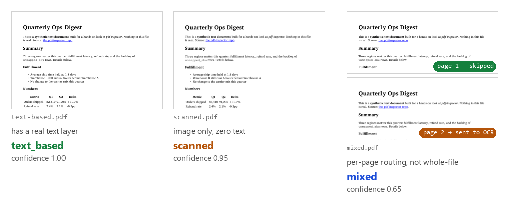

Testing pdf-inspector's claims against PDFs I made up
pdf-inspector (Firecrawl, MIT, Rust core with a pip install pdf-inspector Python binding) claims it can look at a PDF and tell you, in ~10-50ms, whether it's text-based, scanned, or a mix of both — so a pipeline can route only the scanned pages to OCR instead of running every page through it. It also claims it can convert the text-based pages straight to Markdown, tables and all.
To check the first claim, I needed three kinds of PDF and a ground truth for each: one that's real, extractable text; one that's a flat scanned image with no text layer at all; one that's both, mixed across pages. I built all three myself with PyMuPDF rather than use a real document, so I'd know the correct answer for every page before running the tool — no paid API, no external service, everything below ran locally. Here's what pdf-inspector said, against what I already knew was true:

All three came back correct, and on the mixed PDF it also correctly flagged only the scanned page for OCR — that combination (right label, right page-level routing) is the specific thing the tool is claiming to do, so this is the result that matters most in this post.
What I ran
| Step | Call | Result |
|---|---|---|
| Classify all three | pdf_inspector.detect_pdf(path) | text_based 1.00, scanned 0.95, mixed 0.65. All three correct |
| Check per-page routing on the mixed case | pdf_inspector.process_pdf(path).pages_needing_ocr | [2]. Page 1 (real text) correctly skipped, page 2 (image) correctly flagged, in 56ms |
| Convert the text PDF to Markdown | pdf_inspector.process_pdf(path).markdown | Headings, bold, italics, lists all converted. The table, one of two headings, a superscript footnote marker, and a hyperlink did not (see below) |
The classification and routing claims hold up exactly as documented. The Markdown conversion is where it gets uneven.
What the conversion dropped
The source table (real cell data, aligned columns, no visible borders since my PDF generator draws borders as plain positioning, not vector lines) came out as this:
### Metric Q1 Q2 Delta
Orders shipped 82,410 91,205 +10.7% Refund rate 2.4% 2.1%-0.3pp Unmapped SKUs 1,204 883-26.7%Not a table. The header row became a heading, the three data rows ran together into one paragraph with no separators. pages_with_tables came back empty for a page that has a real table. The README documents two detection paths, rectangle-based and alignment-based; the rectangle path needs actual drawn border lines, which my source PDF doesn't have, so that one not firing is explainable. The alignment-based path is specifically supposed to catch a borderless-but-aligned table like this one, and it didn't.
Three smaller drops in the same page: one of my two <h3> headings ("Fulfillment") converted, the other got merged into the end of the preceding paragraph as bold text instead of its own heading, with no visible difference between the two in the source HTML. A <sup>1</sup> footnote marker came out as report1., no space, no bracket, nothing marking it as a footnote. And the one hyperlink in the document, <a href="...">the pdf-inspector repo</a>, was converted to plain text, the link itself simply gone, despite "URLs converted to Markdown links" being a documented feature.
Thoughts
The two things this tool is actually named for, classifying pages and routing only the ones that need OCR, work exactly as claimed, and the 56ms processing time makes the "save cost/time" pitch real rather than aspirational. I'd trust it for that today.
I would not yet trust the Markdown conversion unattended on anything beyond plain paragraphs and simple lists. Four separate features that are explicitly documented, tables, one of two identically-styled headings, superscripts, and links, didn't survive the trip on a single one-page test file. That's not "occasionally imperfect," that's most of the structured content on the page.
Appendix: building the test PDFs
| Problem | Cause | Fix |
|---|---|---|
| Needed PDFs with a real text layer, no text layer, and both, without touching any personal document | Every local PDF I could find was private (resume, tax forms, contracts) | Built synthetic ones with fitz.Story (PyMuPDF's HTML-to-PDF), rendered one page to an image via get_pixmap(), reassembled that image into a new zero-text-layer PDF |
| Wanted to know why the table detector missed a real table | Assumed a bug in pdf-inspector | Checked page.get_drawings() on my own source PDF first: one drawing object total, a hyperlink underline. fitz.Story's table borders aren't vector lines, so the rectangle-based detector had nothing to find. Doesn't explain why the alignment-based path also missed it, only rules out one cause |
| First composite image showed all three page thumbnails looking pixel-identical | A scan of a page looks exactly like the page, that's the point, so the image alone didn't communicate why the classifications differ | Added a "has a real text layer" / "image only, zero text" label under each thumbnail, and badged the mixed PDF's two pages "skipped" / "sent to OCR" directly on the image |